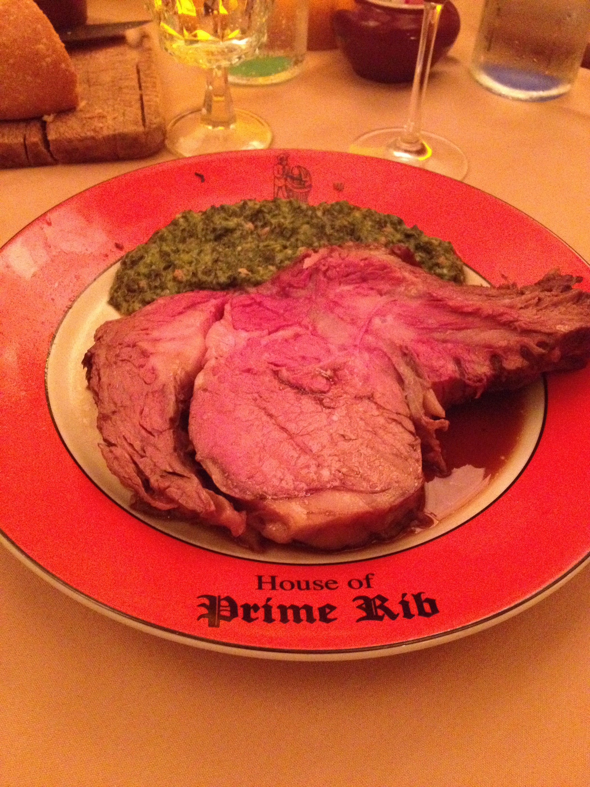
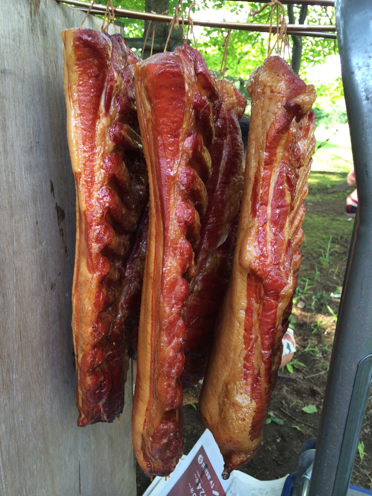

〜良質な肉とワイン~
自己紹介
酒井 克典
良質な肉とワインをメインにしたレストラン経営のコンサルタントをしています。
食材の仕入れからメニューのご提案、店舗のデザイン設計, Web Designまでレストラン経営に関する全てをお手伝いしています。



サポートさせていただいた店舗は3,500件を超えており、多くのレストランオーナーのお手伝いをしています。
また、最近では木製薫製機の販売も始めました。キャンプやBBQで本格的なベーコン作りを楽しめます。
お問い合わせは、Contactよりご連絡お願い致します。